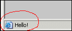
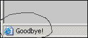

Using the Status Bar
Hover your cursor over this link to see the Effect on Status Bar
Make sure to pay attention to the status bar. It should change as shown when you hover over a link:
 
<!-- The following Code goes in the header of your page --> <SCRIPT LANGUAGE="JavaScript"> <!-- function sayHello() { window.status = "Hello!"; return true; } function sayGoodBye() { window.status = "Goodbye!"; return true; } // --> </SCRIPT> <!-- The following Code goes in the body of your page --> <A HREF="http://www.digioz.com" onMouseOver="return sayHello();" onMouseOut="return sayGoodBye();">Click Here to see the Effect on Status Bar</A>